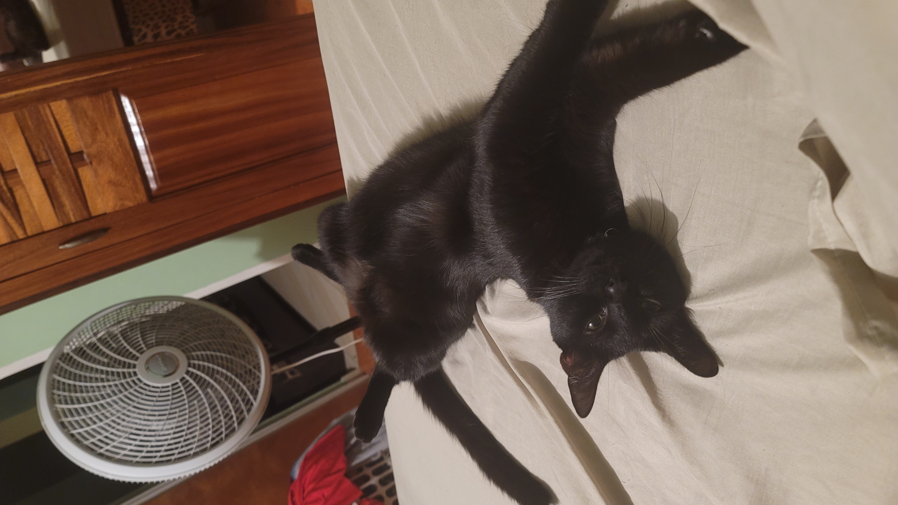

Tramonique Wellington
Hi, my name is Tramonique but most people call me Tram. I’m 26 years old and currently studying Computer Science at The University of the West Indies. Along with school, I also work as a freelancer doing event support and taking on different projects. It keeps me pretty busy, but I enjoy learning new skills and challenging myself in different ways.
I am interested in web development because I like creating things that people can see and interact with. It combines problem solving with creativity, which makes it both challenging and fun. I also enjoy that the field is always changing, so there is always something new to learn and improve on.
Outside of work and school, I enjoy activities that help me relax and recharge. I spend a lot of time watching anime, movies, and TV shows, or listening to music and reading. I also like exploring new interests when I get the chance. These hobbies give me balance and keep me motivated as I continue working towards my academic and career goals.
For me, life is about finding balance between responsibilities and the things that bring joy. I try to stay focused on my goals, but I also make time to enjoy the little things, whether that’s watching a new anime, trying something new, or just spending time with the people I love.